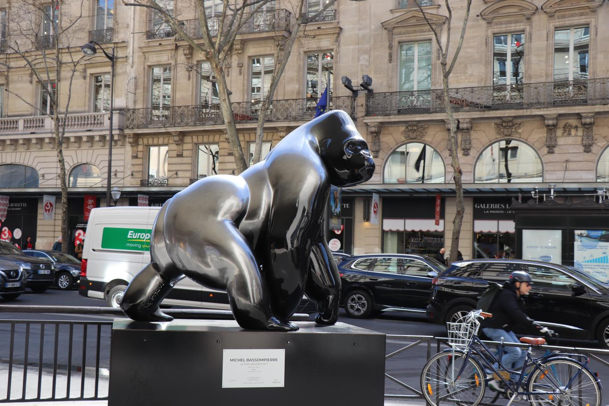
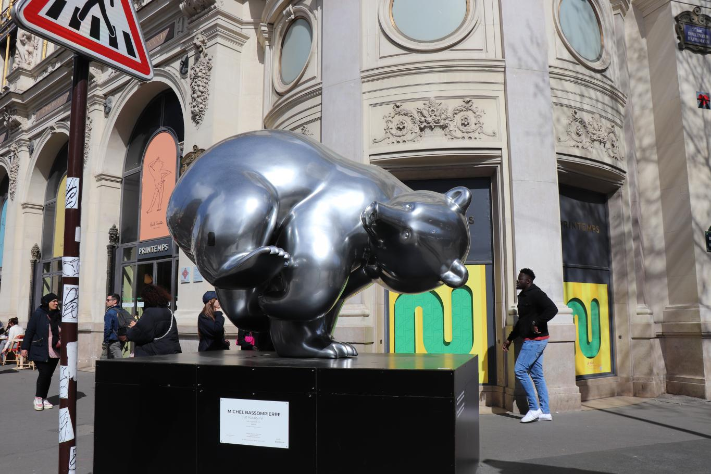
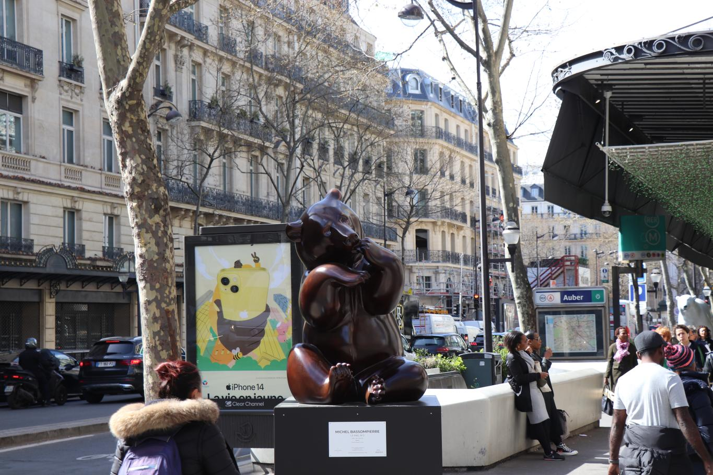
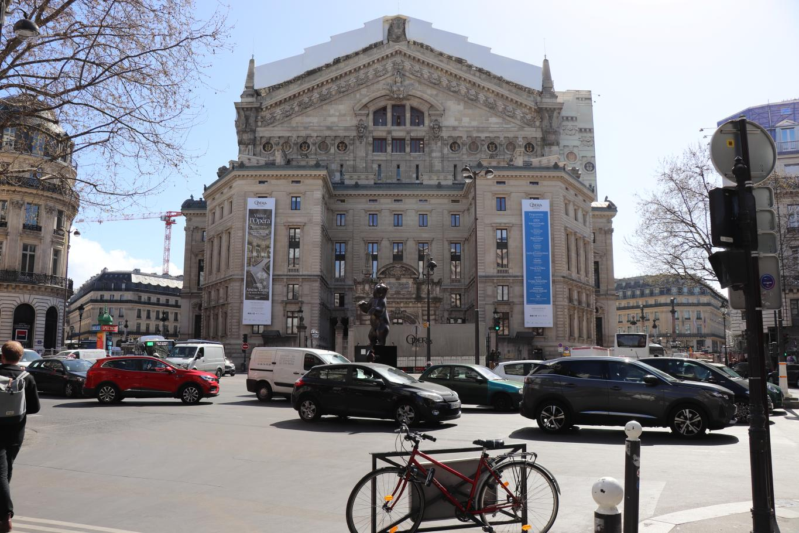
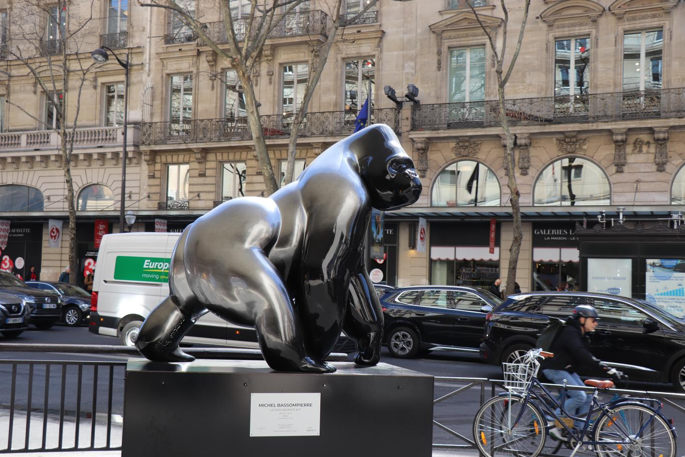
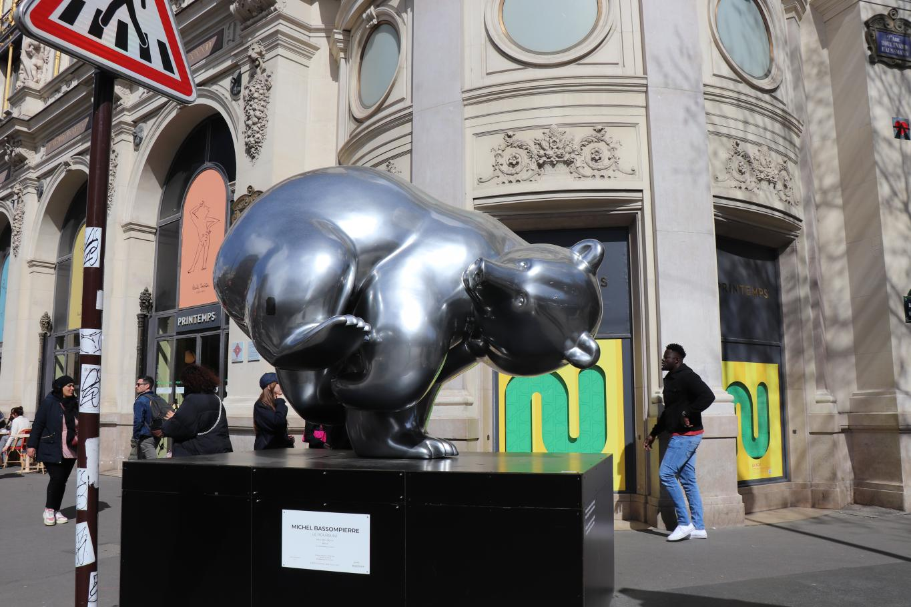
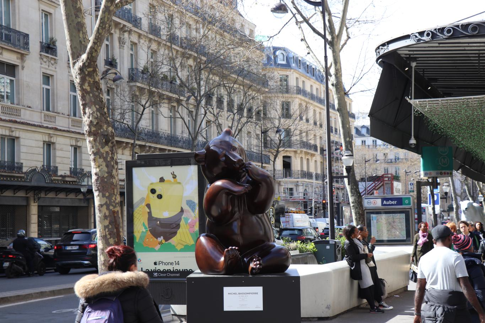
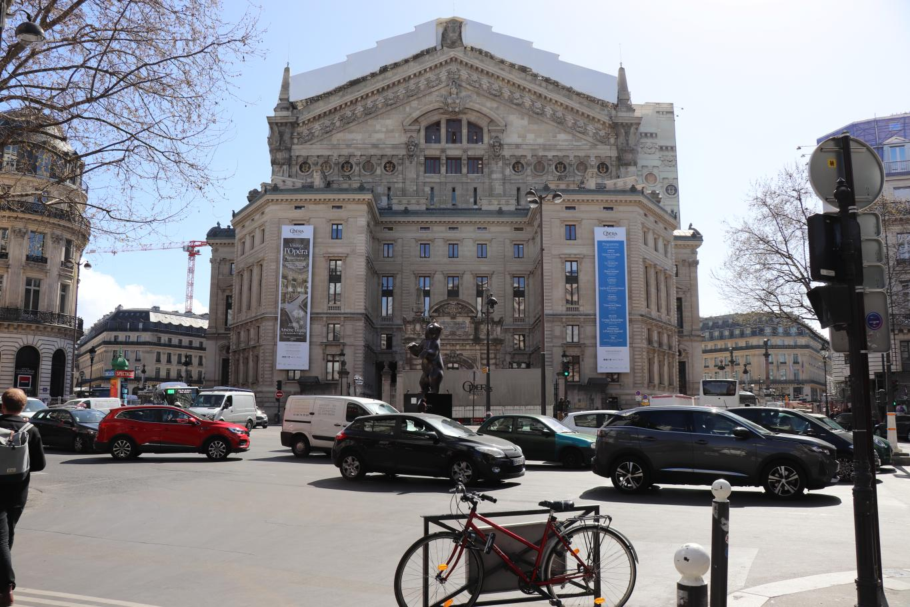

Événement 2023 Paris
En l'année 2023, Paris a été le théâtre d'une exposition extraordinaire mettant en lumière les sculptures exceptionnelles de Michel Bassompierre, un sculpteur de renom. Au cœur du boulevard Haussmann, l'une des artères les plus emblématiques de la ville, ses créations uniques ont captivé l'attention des passants et des amateurs d'art. Michel Bassompierre a choisi de donner une voix artistique aux animaux en voie de disparition à travers ses sculptures remarquables. Chaque pièce était une œuvre d'art à part entière, représentant des créatures majestueuses et vulnérables qui peuplent notre planète. Parmi elles, on pouvait admirer des gorilles imposants, des ours majestueux, des éléphants d'Asie imposants et des pandas adorables, tous porteurs d'un message poignant sur la fragilité de ces espèces menacées. Le boulevard Haussmann s'est transformé en une galerie d'art en plein air, offrant aux passants une expérience visuelle unique. Les sculptures de Michel Bassompierre ont suscité l'émerveillement et l'étonnement, attirant les regards curieux et invitant les spectateurs à contempler la beauté fragile de ces animaux menacés. À travers son exposition, Michel Bassompierre a réussi à sensibiliser un large public à la cause de la conservation de la faune sauvage. Les passants, les touristes et les amateurs d'art ont pu prendre conscience de l'urgence de protéger ces magnifiques créatures et de préserver l'équilibre de notre écosystème. Grâce à la présence des sculptures de Michel Bassompierre sur le boulevard Haussmann, Paris est devenue le théâtre d'une conversation artistique engagée sur la préservation de la biodiversité. Les œuvres de l'artiste ont permis de créer un dialogue visuel entre l'homme et la nature, incitant chacun à réfléchir à son rôle dans la sauvegarde de notre environnement. Cette exposition unique a permis à Michel Bassompierre de faire rayonner son talent et sa passion pour l'art, tout en éveillant les consciences sur la nécessité de protéger les espèces en voie de disparition. Son travail exceptionnel a offert aux passants parisiens une expérience esthétique et émotionnelle inoubliable, leur laissant une empreinte durable de la beauté fragile de la nature et de l'importance de la conservation.
 






